Sunreckon for Blender
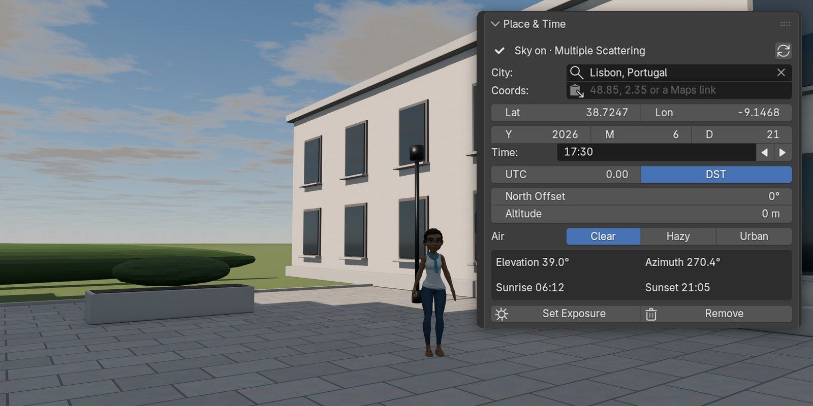
The real sun for any place, date and clock time, in one click. Pick a city, type a time, click Add Sky: Blender's own physical sky, a Sun light that matches it, and an exposure that is not blown out.
One payment, source included (GPL-3.0-or-later), updates for the life of the product · Blender 4.2 LTS to 5.2 LTS · 14-day refund if it doesn't work as described · no subscription, no licence key, no account
Watch it work
What you get
- The sun where it really is. 1,251 cities, each on its own clock (UTC offset and daylight saving). Or paste coordinates or a Google Maps link; the clock is estimated for you and the panel says so. Within 0.014° of NREL's reference algorithm.
- One click to daylight. Blender's own Sky Texture (Multiple Scattering on 5.x, Nishita on 4.2 to 4.5), a Sun light that points where the sky's sun is and takes its strength and colour from it, and the exposure set to -4.5.
- A whole day, keyed. Animate Day runs from sunrise to sunset across your frame range. Plain keyframes: the file renders without Sunreckon.
- Clouds that cast shadows. Four presets, Fast or Volumetric, with the render cost shown in the panel. Shadow in View puts a cloud's shadow in your shot.
- Your HDRIs in the same tab. One click on, Align Sun to HDRI, one click back to the sky.
- One tab, a clean way out. Four sections in the sidebar, nothing in any menu. Remove puts your World and exposure back.
Before and after one click

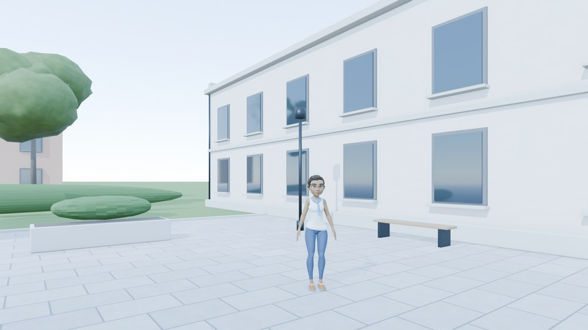

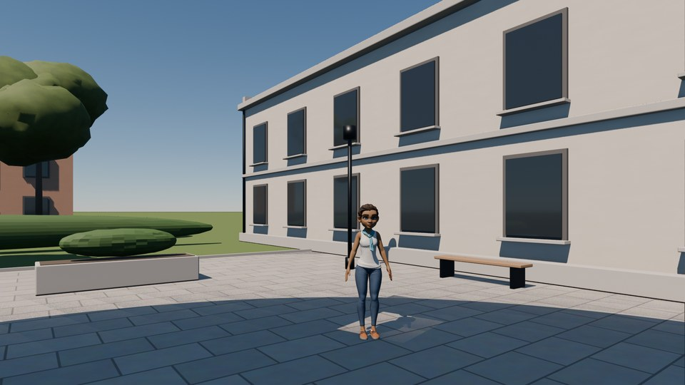
EEVEE, Lisbon, 21 June, 16:00. Left: a new World with Blender's Sky Texture at its defaults, its sun put where Sunreckon puts it, no Sun light. EEVEE does not draw the sky's sun disc, so without a matched Sun light there is almost no sun shadow.
A day, keyed
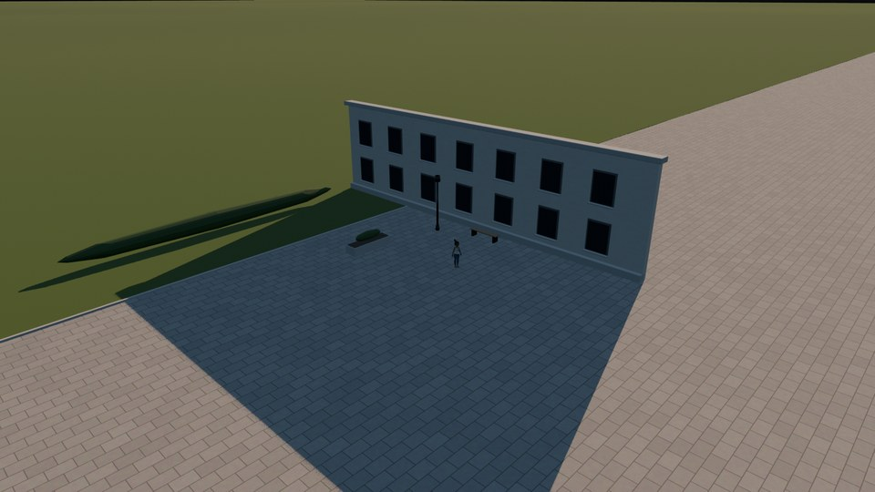
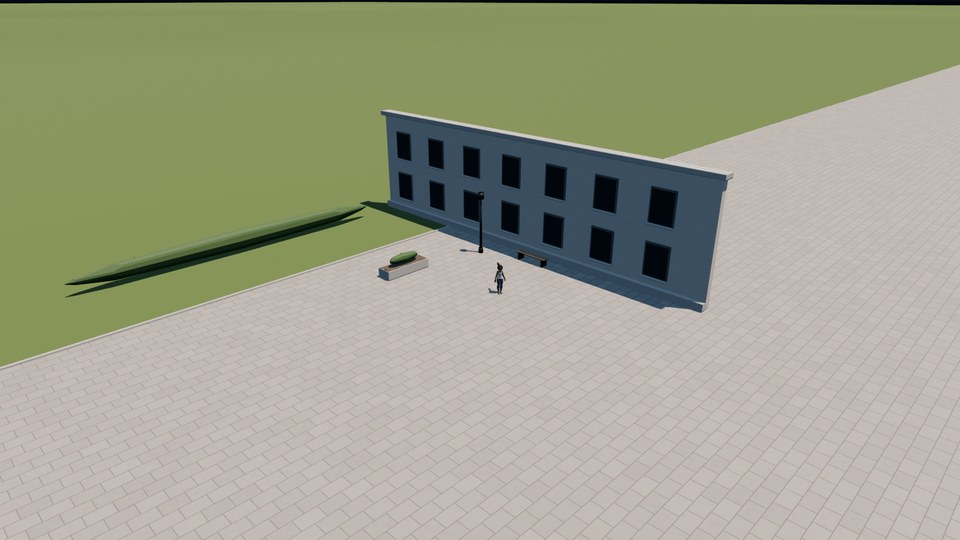
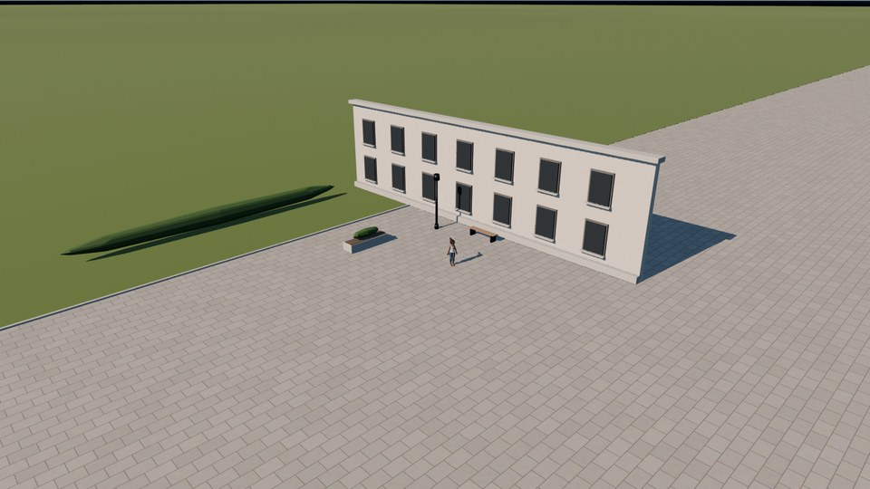
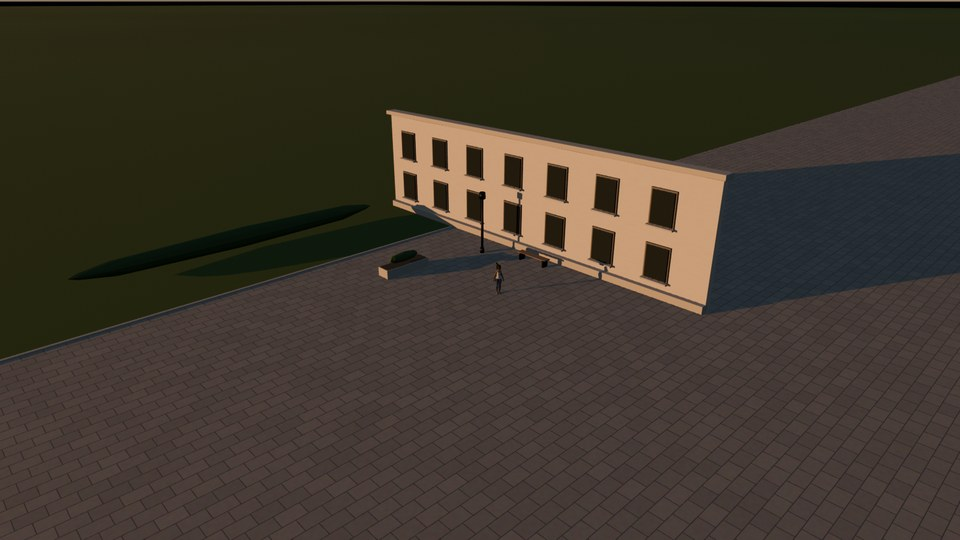
Lisbon, 21 June, EEVEE, frames of one Animate Day. The sky, the Sun light and every shadow move together.
Clouds
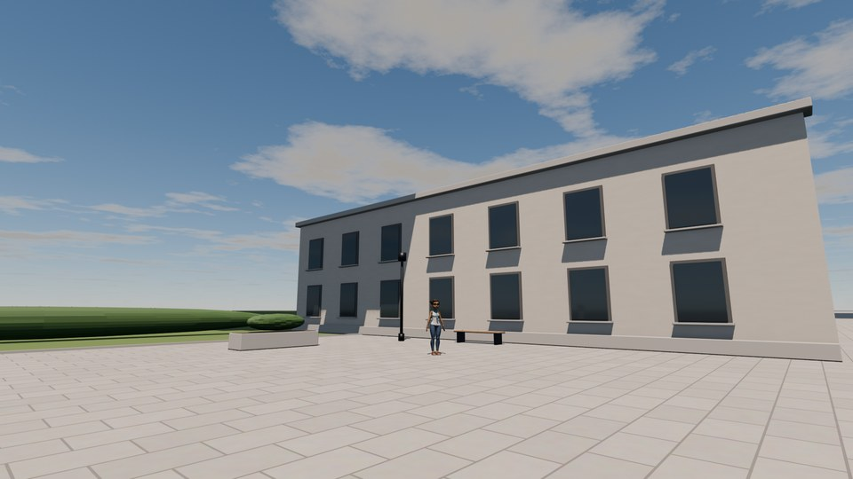
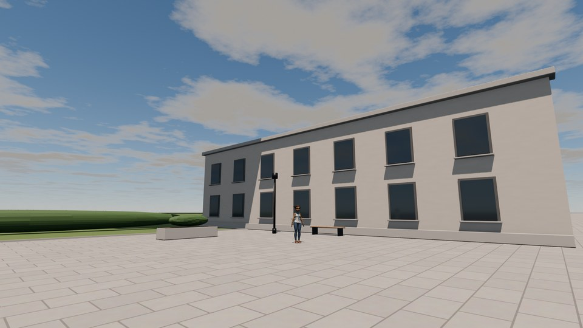
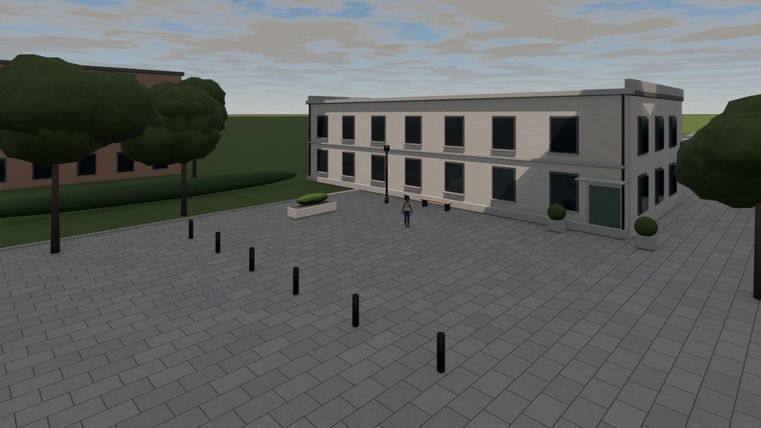
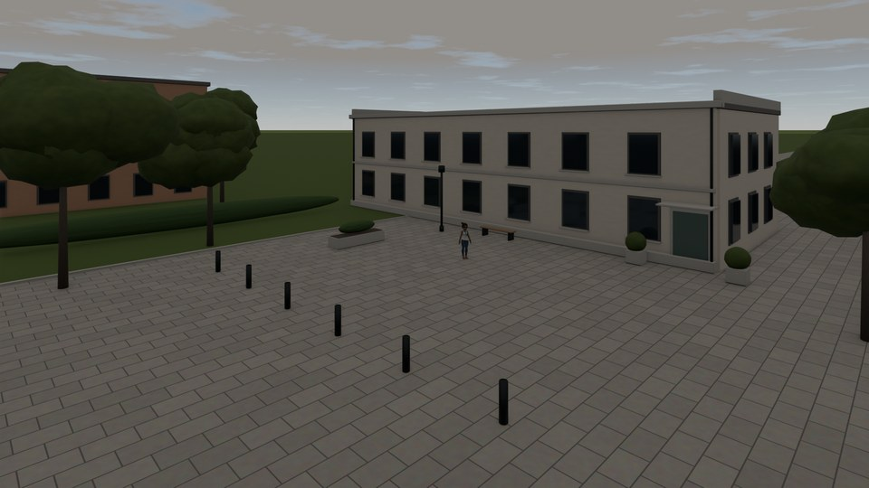
Volumetric quality in EEVEE, Lisbon, 21 June, 15:00, presets at their defaults (Shadow in View for the first three). Render cost is the time of a frame against a clear sky, measured on our reference scene.
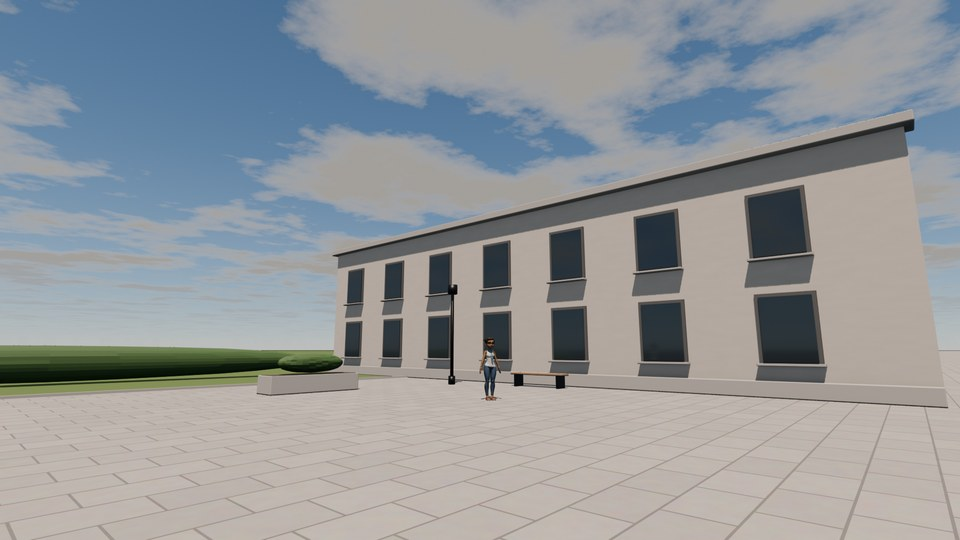
EEVEE, Scattered, the same clouds and sun. Performance Mode keeps the viewport quick: with Volumetric clouds it shows the Fast layer and the cloud shadows while you work; in Cycles, F12 renders the cloud volume.
Shadow studies at a real address
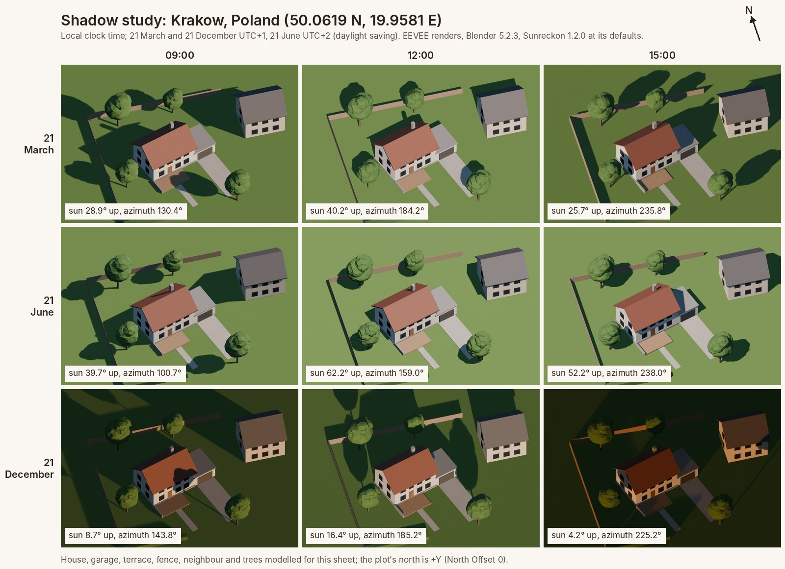
Your HDRIs, and back
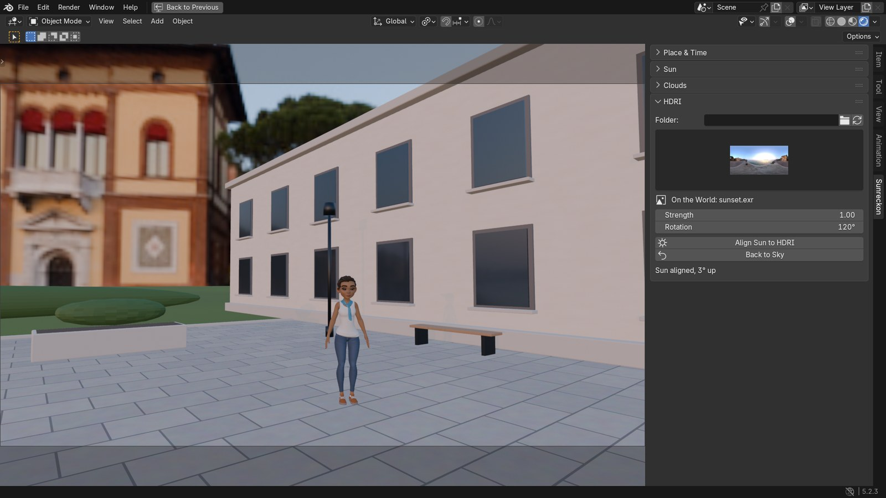
The tab


Who it is for. You light exteriors with daylight (archviz, products, vehicles, animation) and want the sun where it really is without a node session. Your sky add-on stopped working after a Blender update, or you wired Sun Position, a Sun light and the exposure by hand and would rather click once.
Who does not need it. Blender already provides most of the parts for free: its Sky Texture is physically based, and the free Sun Position extension places a Sun light and a Sky Texture from a place and time. If you are happy to set the light and the exposure by hand and need no clouds, you do not need Sunreckon. There is no night sky (stars, moon, aurora) and no clouds to fly through: Physical Starlight and Atmosphere or True Sky are built for those.
Tested on every Blender from 4.2 LTS to 5.2 LTS
| Blender | Installs from the zip | Tests passed | Acceptance tests passed | Failed |
|---|---|---|---|---|
| 4.2.23 LTS | yes | 196 | 22 | 0 |
| 4.3.2 | yes | 195 | 22 | 0 |
| 4.4.3 | yes | 195 | 22 | 0 |
| 4.5.15 LTS | yes | 195 | 21 | 0 |
| 5.0.1 | yes | 195 | 21 | 0 |
| 5.1.2 | yes | 195 | 21 | 0 |
| 5.2.3 LTS | yes | 195 | 21 | 0 |
Sunreckon 1.2.1, official Linux builds. Windows and macOS are not tested yet.
Render cost of the clouds
| Clouds | EEVEE vs clear sky | Cycles vs clear sky |
|---|---|---|
| Clear sky | ×1.0 | ×1.0 |
| Few, Fast | ×1.0 | ×1.2 |
| Few, Volumetric | ×1.0 | ×4.2 |
| Scattered, Fast | ×0.9 | ×1.2 |
| Scattered, Volumetric | ×1.0 | ×4.6 |
| Broken, Fast | ×0.9 | ×1.3 |
| Broken, Volumetric | ×0.9 | ×5.2 |
| Overcast, Fast | ×0.9 | ×1.5 |
| Overcast, Volumetric | ×0.9 | ×6.0 |
The time of one 1920x1080 frame against the same frame with a clear sky, on our reference scene (a house on a lawn with trees).
How we tested, and how these images were made
Every release runs one command that downloads the official Linux build of each Blender in the table, installs the zip with Install from Disk into a fresh user folder, and runs the full test suite and a separate set of acceptance tests written by an independent reviewer. The zip also passes Blender's own extension validate.
Render cost: Sunreckon 1.2.1 in Blender 5.2.3, one 1920x1080 frame of the reference scene; Cycles on the CPU at 128 samples with adaptive sampling and denoising, EEVEE at 64 samples. The machine has 4 CPU threads and no graphics card, so EEVEE ran in software; EEVEE's differences under 10% are run-to-run noise. The seconds:
| Clouds | EEVEE | Cycles |
|---|---|---|
| Clear sky | 64 s | 117 s |
| Few, Fast | 61 s | 145 s |
| Few, Volumetric | 64 s | 495 s |
| Scattered, Fast | 60 s | 142 s |
| Scattered, Volumetric | 63 s | 537 s |
| Broken, Fast | 60 s | 152 s |
| Broken, Volumetric | 60 s | 612 s |
| Overcast, Fast | 58 s | 170 s |
| Overcast, Volumetric | 59 s | 703 s |
Sun position: against NREL's Solar Position Algorithm, the largest error is 0.010° over 14 reference cases, and 0.014° in an independent check of 2,000 random places and dates from 1900 to 2100.
Images: Sunreckon 1.2.1 installed from its zip in the official Blender 5.2.3 build. The courtyard images are EEVEE renders at Sunreckon's settings (the exposure raised a third of a stop on the top image); the four day tiles are frames of the video's crane sequence, rendered at 1600x900 with 8 samples; the panel images and the HDRI image are captures of the real window. Rain v3.3 is from studio.blender.org (CC BY 4.0), with her arms lowered; the courtyard and the Krakow house are ours.
Video: the interface is recorded at 60 frames a second with real clicks and typing; the pointer is drawn where it was, and the waits while Blender redraws in software are cut. The day in Krakow and the drifting clouds are EEVEE renders stepped one frame per video frame; the clouds move at 3.1 times real time.
Details
- Buying: secure checkout by Polar; the download arrives by email; the zip includes the full source. One payment, updates for the life of the product. No subscription, no licence key, no account, no paid V2, no personal or commercial split. If it doesn't work as described and we can't fix it, email us within 14 days for a full refund (terms).
- Blender 4.2 LTS to 5.2 LTS, EEVEE and Cycles. Installed as an extension from the zip.
- Privacy: Sunreckon makes no network calls. It reads only the HDRI folder you pick and the HDRIs that ship with Blender, and writes only into your .blend file and Blender's thumbnail cache.
- Support: support@ochrestack.com, with your Blender version, your operating system and what you did.
Install
- Download
sunreckon-1.2.1.zipfrom the link in Polar's email. Do not unzip it. - In Blender, Edit > Preferences > Get Extensions, open the menu (⌄) at the top right, choose Install from Disk... and pick the zip.
- Press N in the 3D Viewport and open the Sunreckon tab.
If Blender asks about internet access, Continue Offline is fine; a yellow "Repository Alert" afterwards is Blender's notice about its online catalogue, not an install error. The quick start walks through every section.
Known limits
- Fast clouds cast no shadows; Volumetric ones do. EEVEE's cloud shadows cover 2.4 km around the camera and fade out at the edge.
- No night sky, stars, moon, aurora, fog, rain or snow, and no clouds the camera can enter.
- The exposure is a fixed -4.5: golden-hour shots come out about a stop darker than midday; raise the exposure for them.
- Time zones come from the city list (2026 daylight-saving rules). A pasted place gets an estimate from the nearest listed city or the longitude: check it near a zone border.
- Blender's sky is black below the horizon: a finite floor shows a black band at its edge. Extend the ground or frame it out.
- Align Sun to HDRI needs about 0.6 GB extra memory for an 8k map. The HDRI list shows the files directly in the chosen folder.
- Performance Mode switches the clouds at render time with the add-on: a Cycles file sent to a render farm without Sunreckon renders no cloud volume; turn Performance Mode off before you send it.
$19 once, source included, updates for the life of the product · 14-day refund if it doesn't work as described
Character: Rain Rig (CC) Blender Foundation | studio.blender.org, used under CC BY 4.0, arms lowered, in a courtyard of our own. Rain is not included with Sunreckon, and Blender Studio does not endorse it.